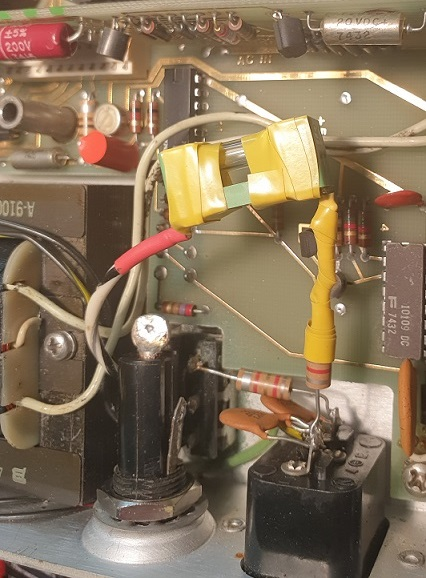

I received this unit from a family member who noticed it at a farmer's market in Florida. The vendor was asking 5USD for it, and so it became one of my favourite gifts from a holiday. :D When I received it, the outwards appearance was quite grotty, as shown in figure 1. However, it was clear that this was surface-level dust and grime, and that the majority of the device was in quite reasonable condition. Figure 2 shows the rear was similarly dirty.
Figure 1: The front of the unit as it arrived to me.

Figure 2: The rear of the unit as it arrived to me.
The only 'serious' damage was the missing power/reset/sample rate knob and, as figure 2 shows, the two rear feet. As of writing this, I am deciding whether to buy or 3D print a replacement knob, though I am quite set on 3D printing some replacement feet in the future. I have no printer of my own, so would need to rely on some rare access to a machine when it becomes available again.
Figure 3: The damaged rear feet - however the front bracket holder appears fine!
Before powering on, it is CRUCIAL to check for any mains input settings - especially as this came from the USA. To open the unit, pull the two black tabs (figure 4) outwards by around 1 inch. The top unit will lift itself by 2 or 3mm and simply lift out.
Figure 4: Maximum extent of the rear tabs on the HP 5300B. Note how the module has lifted itself from the lower unit.
Figures 5, 6, 7 and 8 show the top and bottom of the two internal boards - one for each module. I had to admire the incredible engineering from HP, that allows such ease of access whilst being absolutely sturdy. There is only one screw, on the 5300B module, separating a fully constructed, operational device from completely separated PCBs. Even in this case, the screw is used to securely hold the mass of a heavy mains transformer, so its use is more than pardoned.
Figure 5: Top side of the HP 5300B PCB.

Figure 6: Bottom side of the HP 5300B PCB.
Figure 7: Top side of the HP 5308A PCB.
Figure 8: Bottom side of the HP 5308A PCB.
Figure 6 shows the location of the single screw, as well as a voltage selector switch. This was switched to 230V - phew! Figure 5 indicates that someone else has been into this unit before - and have scribbled "bad unit" in orange pencil on T2. A nice littel find can be seen on figure 7 - there is a stamp showing this particular PCB was tested by Stan H. With the PCB separated from the case, I used this as an opportunity to test the unit with power - the bottom unit must be plugged in to test. I switched on the unit, and - nothing. I could hear an awful racket from the power supply, but the outputs showed no voltage. A quick measure with a laser theremometer revealed the transformer was over 100C! Some smoke started to whisp out, so I hurridly turned off the power.
After ensuring the transformer had cooled, I desoldered the secondaries, and tested the output. The 5300B manual [1] states that this voltage should be around 22V, which it was - so no catastrophic damage to the transformer. I then probed around the voltage rails to measure their impedance - all were good except the +17V rail was shorted. No wonder the poor transformer was suffering. Fortunately, the culprit turned out to be a single tantalum capacitor - 22uF - which I replaced with a electrolytic I had in stock.
I turned on the unit again and it worked! Results shown in figure 9.
Figure 9: The first signs of life in the HP5300B, after so many years of inoperation.
I had already cleaned the unit unit thoroughly - I found IPA worked without any issue on the front and rear panels, even with hard scrubbing using paper towel. However the beige paint of the shell appeared to come away slightly when worked hard. The sticker on the red display plastic is made of metal, and quite tough. As the sticker was peeling, I finished the job and washed the plastic in warm soapy water. The metal sticker was cleaned using IPA, and adhered to the plastic as it was before. The two modules were recombined, and can be seen in figure 10.
Figure 10: The cleaned, working HP5300B and HP5308A.
I performed an initial verification of operating using the Agilent 33120A at its maximum output frequency of 15 MHz - easily within range of the HP5308A. Figure 11 shows the HP5308A slightly underreads, but this is fantastic given that it has sat unused in a barn for more than a decade (according to the farmer who sold it).
Figure 11: Agilent 33120A being used to verify operation of the HP5308A.
In conclusion, this unit is a fantastic gift. It was worth price alone in parts, but works brilliantly after changing a single capacitor. I have temporaily added hot glue to the bolts to prevent scratching whilst I design/make some replacement feet (see figure 12), but I consider this restoration prcatically complete. In the future, I may experiment with replacing the timebase for this unit, as it operates from a standard crystal - it would be interesting to compare performance to a TCXO or OCXO. Additionally, I will see about gaining access to a reference source to calibrate this device. Whilst it is not designed to be high-end lab grade instrumentation, it works great for me! I have added a copy of the HP5308A manual as reference [2].
Figure 12: Detail of a temporary foot to prevent stratching whilst in use.
-----------------------------------------------------
29/05/22
I was testing an old RF signal generator (Marconi TF995B/2) and was curious to determine how accurate the analogue frequency readout display was. To do this, I connected the output of the TF995B/2 to the HP5308A - assuming the HP5308A would be the more accurate of the two instruments. Unfortunately, the HP5308A would not turn on! I determined that the 150mA fuse had blown. This was very frustrating as the fuse holder could only accommodate a 32mm fuse - 150mA being a relatively 'rare' fuse rating - I'd paid £1.50 on a Littelfuse 0312.150HXP! However, I had a stock of 200mA, 5x20mm fuses, which can be had readily in packs for pennies from Amazon. A few mA above the rating, so fingers crossed nothing bad happens from that LMAO. I tried packing the fuse holder with a carefully cut bolt to accommodate a 5x20mm fuse, but the fuse holder cap (figure 13) had always been in shakey condition, and refused to properly connect.
Figure 12: The damaged fuse holder cap, showing cracking in the plastic.
I thought about replacing the entire fuseholder, but this seemed a bit of a waste considering the fuseholder was in good condition. After some searching, it turns out the fuseholder (a Littelfuse 345002-020) was part of a 345 series. This meant I could buy a new screw top! Indeed - I could buy a screw top which would accommodate 5x20mm fuses! The 03455LF1HX020 appeared to be appropriate, so I purchased one for £2.84. However, the lead time is listed as 02/23. I couldn't wait that long! In the end, I used a Littelfuse 0PTF0078P to hold a 5x20mm fuse - for no other reason than it being the cheapest fuseholder to fit inside the HP5308A. To provide some sort of protection against AC mains screwing the instrument, I wrapped this in some insulating tape, as shown in figure 13. Not great, but it will hopefully last until I get the legit fuse cap. Otherwise, I will probably die.
Figure 13: The haphazard repair.
-----------------------------------------------------
26/02/23
The Littelfuse 03455LF1HX020 arrived from Digikey, however it did not fit the original fuse holder within the HP 5300B. As such, I opted to purchase a compatible fuseholder and cap from Littelfuse to replace the original. I chose the Littelfuse 03455LF4H, which came with a cap and plastic nut. This turned out to be a perfect fit within the HP 5300B - it now accepts the much cheaper 5x20mm fuses and maintain the 150mA rating.
At this point, I consider the unit safely repaired though I am keeping an eye out for a replacement knob for the PWR/Sample Rate control.
v1.0: 26/02/22
v2.0: 09/06/22
v3.0: 26/06/23
REFERENCES
[1] HP 5300B & 5310A Operating & Service Manual[1] HP 5308A Operating & Service Manual